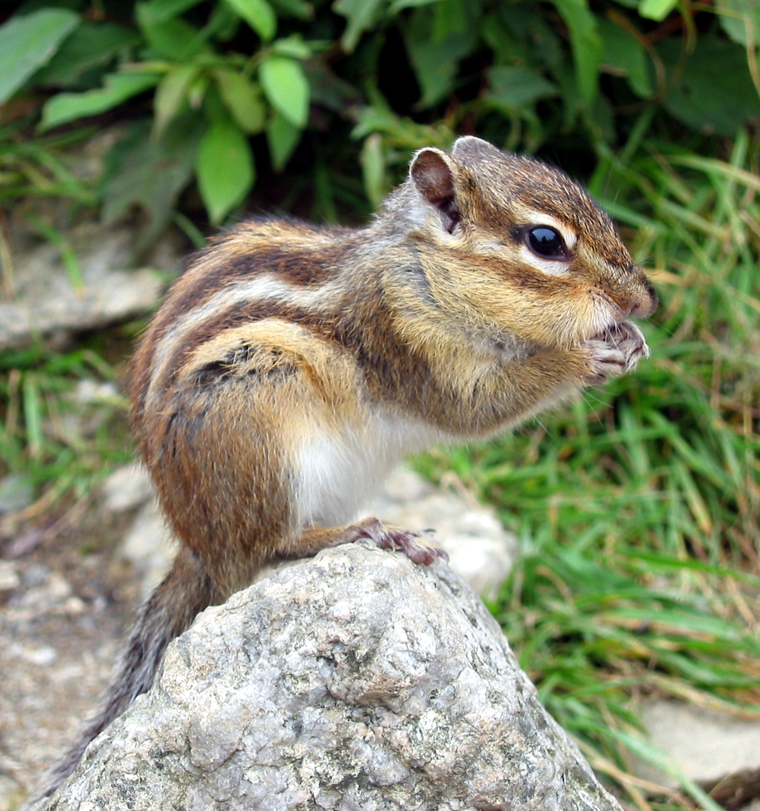

Сибирский бурундук — это маленький подвижный зверек. В природе существует 23 вида бурундуков. Вес бурундука колеблется от 28 до 142 грамм, в зависимости от возраста, питания и времени года.
Животные роют длинные норы протяженностью до 3,5 метра. В норах несколько кладовых для хранения пищи. Бурундук может за одну осень запасти до 6 килограмм кедровых орехов. Точное происхождение слова «бурундук» неизвестно, есть предположение, что название связано с характерными звуками «бурун, бурун», которые издает зверек. Считается, что эти звуки бурундук издает перед дождем. Научных доказательств этому явлению нет, но, правда, после таких сигналов в тайге часто действительно наступает непогода.